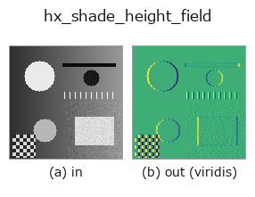

halcon_ext op• 데이터 종류: image → image
• 호출: fullseye.apply(img, "hx_shade_height_field", a=0.5, b=0.5)(2-D 는 이미지 1 장 + 스칼라 노브 2 개 a,b∈[0,1] 모델)
• HALCON 대응: shade_height_field(의미·매개변수는 HALCON 레퍼런스가 참고가 됩니다)

*그림은 128×128 합성 입력에서 실제로 실행한 출력. 왼쪽이 입력, 오른쪽이 출력. 점군은 위에서 본 산점도(밝기 = z), 1-D 열은 꺾은선, 볼륨은 z 방향 최대값 투영, 동영상은 가운데 프레임, 복소 영상은 진폭이며, 그림이 되지 않는 반환값은 값 자체를 표시한다.*
*출력은 viridis 풍의 의사 컬러(짙은 보라 = 작음, 노랑 = 큼)로 표시한다. 거리·위상·방향·깊이 같은 「양의 장」을 읽기 위해.*
노브 a 를 훑기(0.1 / 0.5 / 0.9, 다른 노브는 기본값):
▸ hx_shade_height_field: 노브 a 스윕 (문서 사이트)
노브 b 를 훑기(0.1 / 0.5 / 0.9, 다른 노브는 기본값):
▸ hx_shade_height_field: 노브 b 스윕 (문서 사이트)
다른 영상에서도(합성 장면 / 사진 / 동전. 윗줄이 입력, 아랫줄이 그 출력. 노브는 기본값):
▸ hx_shade_height_field: 다른 입력 이미지 (문서 사이트)
*4열은 컬러 (H,W,3) 입력. 이 op는 채널을 넘나들지 않고 컬러를 다룰 수 있다(색 채널을 세 번째 공간축으로 컨볼루션하지 않음).*
높이장 v 를 Lambert 음영으로 그립니다(법선×광원). 광원은 방위 a·앙각 b.
v를 높이장(gray 값 = 높이, 화소 간격 1)으로 간주하고, np.gradient의 (gy, gx)로부터 법선 n = (-gx, -gy, 1) / sqrt(gx^2 + gy^2 + 1)을 만들어, 방향 l = (cos(el)cos(az), cos(el)sin(az), sin(el))의평행광과의 내적 n·l을 0에서 아래로부터 clip하고, min-max로 [0,1]로 정규화하여 반환한다(Lambertian 음영).
• a → 광원의 방위각 az = a*2*pi(lx = cos(az)가 열 방향, ly = sin(az)가 행 방향의 성분).
• b → 광원의 앙각 el = (0.2 + 0.7*b) * pi/2(약 18°~81°. 1이면 바로 위에 가깝다).
주의: 높이의 스케일 계수가 없고, [0,1]의 값을 수백 화소에 걸쳐 미분하므로 기울기는 아주 작다. 그대로는음영의 차가 거의 없지만, 마지막의 min-max 정규화로 보이게 하고 있다. 따라서 출력의 절대적인 밝기에는 의미가없으며, 입력이 평탄하면 모든 화소가 0이 된다. 깊이 영상이나 hx_fit_surface2로 추정한 배경면의 요철을 눈으로 확인하는 용도용.
아무것도 찍히지 않은 프레임(실측): 밝기가 균일한 이미지를 넣으면 밝기와 무관하게 결과가 비어 있다(모든 화소가 배경 0). 순백이든 순흑이든 같으며, 밝기 자체로는 아무것도 검출하지 않는다.
• gallery2d_halcon_ext 패밀리 가이드
• 샘플 데이터 카탈로그(DL URL / 라이선스) —— 2-D 는 skimage.data(BSD/public)+ 합성, 3-D 는 실데이터 소스(Stanford/PDS 등)의 DL URL.
• 연산자의 내력·참고문헌 —— 이 연산자 족의 바탕이 된 연구/기법의 출처.
• 알고리즘의 정전(저자·연도)과 용도는 위의 패밀리 사용 가이드에 적혀 있습니다.
아래 프로그램은 실제로 실행됨을 확인했습니다(그림과 같은 입력). Studio 도움말에서는 이 블록이 버튼이 되어 즉시 불러와 실행할 수 있습니다.
hx_shade_height_field 0.50 0.50
• gallery2d_halcon_ext — py -3.11 examples/gallery2d_halcon_ext.py
image 를 입력으로 받는 것)identity · gaussian · mean_box · bilateral · unsharp · median · min_filter · max_filter
halcon_ext)hx_gen_circle · hx_gen_ellipse · hx_gen_rectangle2 · hx_gen_checker_region · hx_gen_grid_region · hx_gabor · hx_fit_surface1 · hx_fit_surface2
*Provenance: ops.py — 2D 연산자 레지스트리. 이 op 노트는 tools/opdocs.py md 가 자동 생성합니다(직접 편집하지 마세요).*
© 2026 Kazufumi Furuse — Fullseye operator documentation. Licensed under Apache-2.0.